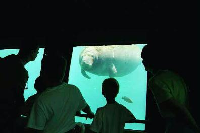

The boys check out the underwater viewport in the manatee pool.
The Homosassa State Park keeps examples of local animals; the only exception is this hippo who was there from years before when it was a private zoo.
If you ever make it to this area, be sure to stop in for an unforgettable demonstration of how hippo's naturally mark their areas.
There's another wonderful state park at Wakulla Springs. One activity there is a boat tour of the wildlife on the Wakulla River. This is a pair of 9-foot aligators. These boys were less than half a mile downstream of the swimming area.
Sean leaps into 15 feet of water. This platform is directly next to the source of the Wakulla Springs. Just off the end of the platform the water emerges from underground in the bottom of a 160 foot pit.
At Wakulla Springs they fight a constant battle keeping the water free of some kind of foreign water grass. Every day they have a crew wading into the water and loading as much grass as they can into trucks to haul away. The guys were pretty nice, and showed all the kids in the swimming area the crayfish that got caught in the grass when it was removed. Then these sweet, innocent kids would run and feed the crayfish to the bigger fish.
This was the closest photo I could get of an alligator near the swimmers. This one is probably 4 or 5 feet long. One afternoon as the kids were swimming we saw one this size swim off the end of the platform that Sean was jumping off of (above).
The next morning the swimming area was late to open because a gator was IN it. As we waited, a guy came in with a boat and shooed the gator out so we could swim.
Back to the McQueen Family Home Page.